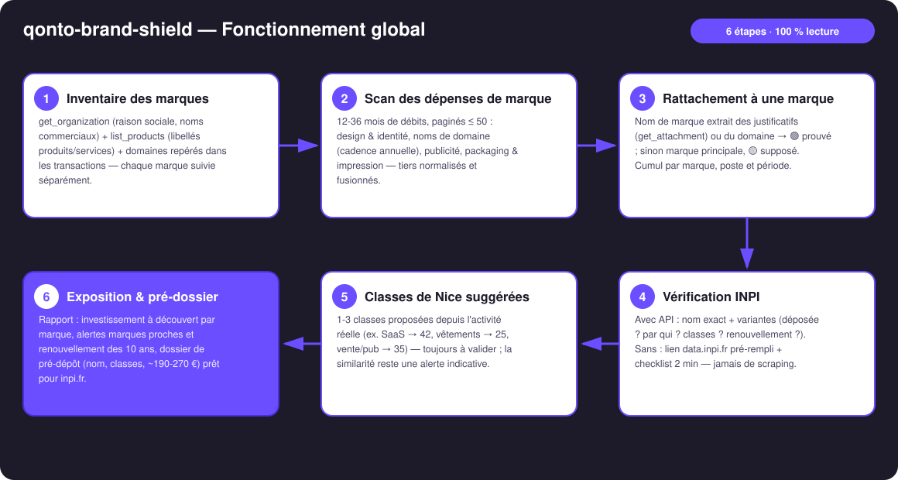
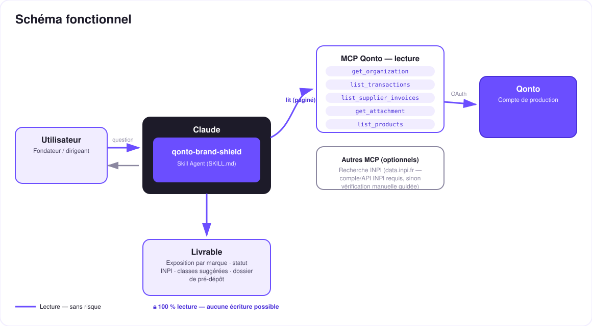

La marque que tu finances est-elle protégée ? — l'exposition de marque de ton compte Qonto, chiffrée.
Chaque mois, le compte paie des dépenses qui construisent une marque : un logo, des domaines, de la publicité, du packaging. Et pendant ce temps, personne ne vérifie si le nom lui-même est protégé. Le skill fait les deux :
Design/logo, domaines, publicité, packaging, impression — détectés dans les dépenses réelles : « tu as investi X € sur [Marque] », rattachements tagués 🟢🟡.
Déposée ? Par toi ? Marques proches dans tes classes ? Renouvellement des 10 ans ? Avec API, ou vérification manuelle guidée en 2 min.
L'investissement « à découvert » : tout ce qui est déjà dépensé sur un nom que rien ne protège.
Nom, classes de Nice suggérées depuis l'activité réelle, coût indicatif (~190-270 € pour 1-3 classes), prêt pour inpi.fr.
Exemple (chiffres et marque inventés) : « Tu as dépensé 4 320 € en 8 mois pour la marque Nordlys. Elle n'est pas déposée. Une marque proche existe en classe 42 depuis 2021. Dépôt en 2 classes : ~230 €, soit ~5 % de l'investissement déjà à découvert. »
| Prérequis | Détail | Obligatoire |
|---|---|---|
| Compte Qonto production | Le skill s'adapte à toute organisation — get_organization d'abord, zéro donnée en dur | ✅ |
| Pays | Registre : INPI = France. Autres pays Qonto (DE, ES, IT…) : exposition financière valable partout ; côté registre, piste EUIPO — jamais de donnée de registre inventée | ℹ️ détecté |
| MCP Qonto connecté | Connecteur officiel (claude.ai / Claude Desktop), login OAuth | ✅ |
| Accès INPI | L'API data.inpi.fr demande un compte + une demande d'accès. Sans lui : lien de recherche pré-rempli + vérification manuelle guidée (~2 min). Pas de scraping | ⭕ optionnel |
| Historique ≥ 12 mois | 24-36 mois recommandés — les cadences annuelles (domaines) ne se voient que sur des années pleines | ⭕ |

get_attachment) ou du domaine → 🟢 ; sinon marque principale, tagué 🟡 — jamais présenté comme certainlist_supplier_invoices pour les noms fournisseurs propres · IBAN masqués
100 % lecture : le skill ne crée aucune écriture MCP — pas de virement, pas de facture, rien à approuver. Le seul « acte » possible, le dépôt de marque, se fait sur inpi.fr, par toi, après validation humaine. La similarité de marques est une alerte indicative, pas un avis juridique — conseil en PI recommandé.
| Poste | Signaux | Exemples de tiers |
|---|---|---|
| Design & identité | Libellés logo / branding / identité / charte graphique / naming | Plateformes freelance, agences, designers indépendants |
| Noms de domaine | Registrars, cadence annuelle (cross-réf. qonto-subscription-audit) | OVH, Gandi, Namecheap, GoDaddy, IONOS… |
| Publicité | Régies publicitaires | Google Ads, Meta, TikTok, LinkedIn… |
| Packaging & impression | Libellés impression / packaging / étiquettes | Imprimeurs en ligne, fournisseurs packaging |
| Activité détectée dans le compte | Classes suggérées (à valider) |
|---|---|
| SaaS / services logiciels | 42 (+9 si logiciel téléchargeable) |
| Vêtements / print-on-demand | 25 |
| Vente au détail, services publicitaires | 35 |
| Formation / contenus | 41 |
Coûts indicatifs : dépôt 190 € la 1re classe + 40 €/classe supplémentaire (~190-270 € pour 1-3 classes) · renouvellement tous les 10 ans (~290 € + 40 €/classe) · source de vérité : inpi.fr.
| Sortie | Format | Quand |
|---|---|---|
| Réponse dans la conversation | Tableaux markdown (investissement par marque, statut, exposition, alertes) | Toujours — c'est la base |
| One-pager interactif | Fichier/artifact HTML : jauge d'exposition, postes, statut INPI, dossier | Si l'hôte affiche les fichiers (artifacts claude.ai, Claude Desktop, Claude Code) ; repli automatique sur les tableaux sinon |
| Dossier de pré-dépôt | Texte structuré : nom, classes suggérées, coût indicatif, lien inpi.fr | À chaque marque non protégée détectée |
La démo ≤ 3 min jointe à la PR suit le storyboard : problème → cumul d'investissement par marque → vérification INPI (mode manuel guidé montré honnêtement) → exposition chiffrée + dossier de pré-dépôt. Tournée en live sur un compte de production réel. Le script détaillé de tournage est conservé en interne (hors dépôt).
| Idée | Effort | Note |
|---|---|---|
| MCP INPI dédié (API data.inpi.fr intégrée) | Moyen | Supprime l'étape manuelle ; détection dynamique, le cœur marche sans |
| Extension EUIPO / OMPI (marque UE & internationale) | Moyen | Qonto est paneuropéen ; même logique, autres registres |
| Veille des nouveaux dépôts proches | Moyen | Le délai d'opposition INPI est court (2 mois après publication) — alerte utile |
Croisement automatique qonto-subscription-audit | Faible | Les domaines sont déjà des abonnements annuels détectés |
Échéance de renouvellement poussée dans qonto-tax-pilot | Faible | Le renouvellement rejoint l'échéancier des sorties datées |